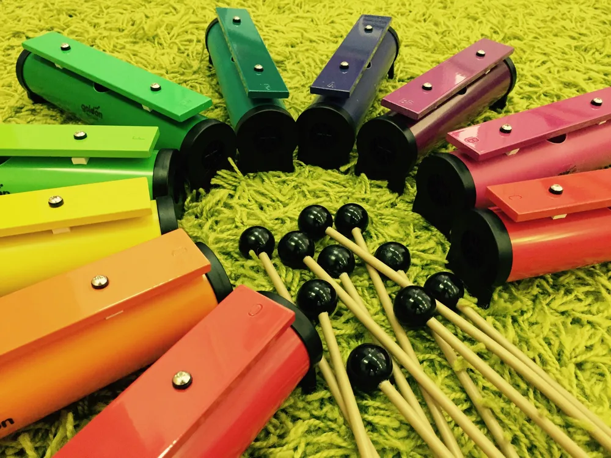
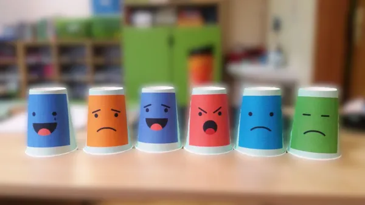
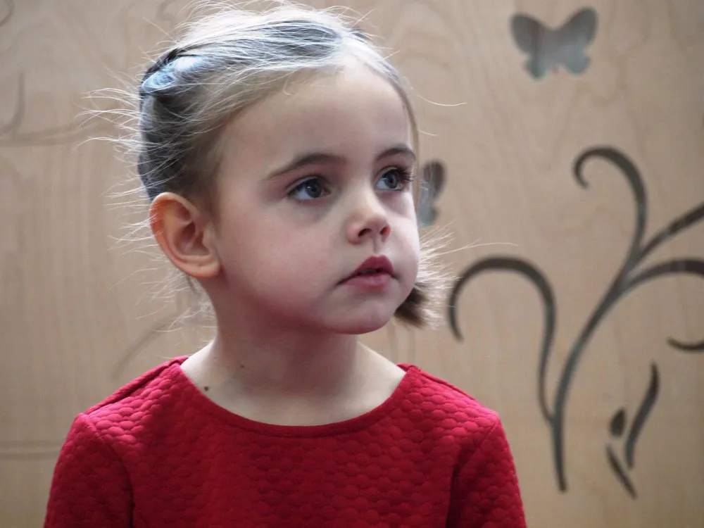

Przedszkole integracyjne językowo-muzyczne · Warszawa, Wola
Czarodziejski Dworek
prywatne przedszkole w Warszawie
Czarodziejski Dworek · od 2003 roku
Tu każda zabawa jest nauką. W sercu Woli, przy ul. Górczewskiej 89, odkrywamy mocne strony Twojego dziecka — małe grupy, basen, języki i 18 specjalistów na miejscu.
- od 2003
- nr 111/PN
- 18 specjalistów
O miejscu
Wyjątkowe miejsce dla Twojego dziecka
Czarodziejski Dworek to przedszkole, w którym odkryte i docenione zostaną mocne strony Twojego dziecka. Naszym celem jest dbanie o jego wszechstronny rozwój, zaszczepienie w nim pasji twórczych, rozwijanie zdolności i wspomaganie harmonijnego rozwoju.
Dowiedz się więcej
W ramach czesnego
Zajęcia wliczone w czesne

Basen
Nauka pływania w ramach czesnego — rozwój motoryki i pewności siebie w wodzie.
Poznaj szczegóły
Angielski
Codzienny kontakt z językiem angielskim prowadzony przez wykwalifikowaną nauczycielkę (C1).
Poznaj szczegółyFrancuski
Nauka języka francuskiego z egzaminatorką DELF — rzadkość wśród przedszkoli.
Poznaj szczegóły
Muzyka
Rytmika i umuzykalnienie metodą Carla Orffa — rozbudzanie wrażliwości muzycznej.
Poznaj szczegółyDlaczego my
Co nas wyróżnia
Małe grupy
Do 14 dzieci, a w każdej 2 nauczycieli.
Przestronne sale
Przestronne sale edukacyjne z zapleczem sanitarnym.
Wykwalifikowana kadra
Bardzo dobrze wykwalifikowana kadra, wszyscy specjaliści „na miejscu" i do dyspozycji dzieci i rodziców.
Zdrowe jedzenie
Zdrowe jedzenie – uwzględniamy wszystkie diety.
Plac zabaw
Duży, ogrodzony plac zabaw.
Bezpieczny teren
Bezpieczny, ogrodzony teren z własnym parkingiem.
Zajęcia w czesnym
Nieodpłatne zajęcia terapeutyczne, językowe, nauka pływania na basenie, warsztaty edukacyjne dla dzieci.
Wsparcie rodziców
Wsparcie dla rodziców, konsultacje specjalistyczne, warsztaty i szkolenia.

Nasz zespół
Specjaliści na miejscu
Logopedzi, psycholodzy, terapeuci SI, fizjoterapeuta.
Olga Jakuć
terapeuta SI
Joanna Golec
psycholog
Marta Byszko
neurologopeda
Anna Sławikowska
fizjoterapeutka
Wsparcie terapeutyczne
Bezpłatne zajęcia WWR
Indywidualne sesje terapeutyczne z wczesnego wspomagania rozwoju dla dzieci uczęszczających do przedszkola ORAZ spoza niego, mających opinię o wczesnym wspomaganiu.
Terapia psychologiczna
Psycholodzy kliniczni wspierają rozwój emocjonalny i społeczny dziecka oraz całą rodzinę.
Terapia logopedyczna
Neurologopedzi pracują nad artykulacją, funkcjami mowy i komunikacją — także metodą wspomagającą PECS.
Terapia pedagogiczna
Rozwój funkcji poznawczych, koncentracji i gotowości szkolnej w bezpiecznej atmosferze.
Integracja sensoryczna
Certyfikowani terapeuci pomagają w przetwarzaniu bodźców, koordynacji i samoregulacji.
Fizjoterapia
Praca nad postawą, napięciem mięśniowym i motoryką, dobrana do potrzeb dziecka.
Trening Umiejętności Społecznych (TUS)
Komunikacja, współpraca i rozpoznawanie emocji w małych grupach rówieśniczych.

Pierwsze kroki
Adaptacja
Zapisy na nowy rok szkolny — bezpłatne sobotnie zajęcia adaptacyjne dla najnowszego rocznika i ich rodziców. Skontaktuj się z nami, aby poznać najbliższy termin.
Galeria
Zajrzyj do naszego przedszkola
Jasne, przytulne sale i duży, zielony plac zabaw — zobacz, gdzie Twoje dziecko spędzi dzień.

Nasze liczby
Opinie rodziców
Co mówią o nas rodzice
Przedszkole z tradycjami. Od wielu lat celebrowane są wartości, które niezbędne są dla rozwoju każdego malucha, takie jak: potrzeba bliskości, szacunek, zrozumienie. […] Panuje tu bardzo przyjazna atmosfera, której nie spotkałam w innych obserwowanych wcześniej placówkach.
To przedszkole na długo zostanie w naszym sercu. […] Panuje tu ciepła, rodzinna atmosfera, a dzieci są traktowane z troską, cierpliwością i prawdziwą uważnością. Ogromnym plusem jest bardzo bogata oferta zajęć, a prawdziwym wyróżnikiem są wyjścia na basen.
Bardzo polecamy przedszkole Czarodziejski Dworek. Córka chodzi tu z przyjemnością, a my mamy pełen spokój, bo wiemy, że jest w dobrych rękach. Panie są cudowne – ciepłe, cierpliwe i zawsze pomocne. […] Grupy są kameralne, dzieci mają własny plac zabaw.
Bajeczne przedszkole, wspaniała kadra nauczycielska i najlepsza dyrektor pani Agnieszka. […] Panowała tam miła, bezpieczna atmosfera, a nauczyciele byli życzliwi, cierpliwi i zawsze zaangażowani w pracę z dziećmi. Bardzo polecam to przedszkole.
Czarodziejski Uniwersytet
Szkolenia, porady, ciekawostki
Nasz Uniwersytet to przestrzeń wiedzy dla rodziców — warsztaty, konsultacje specjalistyczne i materiały wspierające rozwój Twojego dziecka.
Odwiedź Uniwersytet


Szybkie zapytanie
Masz pytanie? Oddzwonimy
Zostaw imię i telefon — odezwiemy się najszybciej, jak to możliwe. Wolisz pełny formularz? Przejdź do kontaktu.
Jak dojechać
Znajdziesz nas na Woli
Jesteśmy w sercu warszawskiej Woli, przy ul. Górczewskiej 89 — z dogodnym dojazdem komunikacją miejską i miejscami parkingowymi w najbliższej okolicy.
-
Adres
ul. Górczewska 89, 01-401 Warszawa (Wola) -
Komunikacja
Przystanki tramwajowe i autobusowe w pobliżu -
Parking
Miejsca postojowe w najbliższej okolicy
Zapraszamy
Zapisz dziecko do Czarodziejskiego Dworku
ul. Górczewska 89, 01-401 Warszawa · 7:00–18:00
690 629 501 / 510 318 948